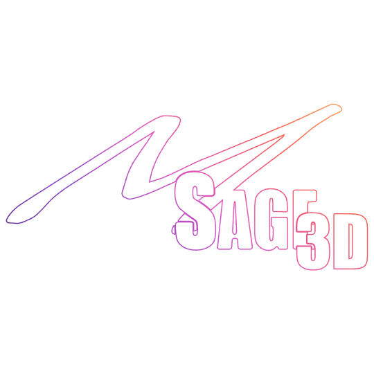

Search Settings
Filters category names, section names, displayed labels, and internal shader property names. Use it to jump directly to a setting in a large material.

Shader Masterby MSage · Creator WikiOfficial creator reference
A layered Unity shader for stylized characters, props, name tags, transformations, reactive materials, and high-impact VRChat visuals—all organized through one creator-focused material inspector.
Shader Master by MSage combines everyday material controls with stylized shading, procedural effects, shader-native text, transformation animation, VRChat-aware visibility, and reusable creator workflows. Most systems are opt-in, so a material can remain simple or grow into a full showcase effect.
Most major features have their own enable toggle, local controls, reset button, and scoped copy/paste tools. Start with the minimum systems you need and add complexity deliberately.
In Unity, create a new Material asset or select an existing material assigned to your mesh.
Open the Shader dropdown on the material and select MSage Shaders/Shader Master. The custom MSage inspector will replace Unity’s default property list.
Set Base Color, Base Color Texture, Normal Map, and optional Alpha Map. Confirm the correct UV channel and set panning to zero for stationary textures.
Select a shadow style and transparency mode before tuning effects. Opaque is the simplest and most reliable starting point.
Enable a section, tune it, and test in the lighting and camera contexts your audience will actually use.
The inspector uses a three-level hierarchy: purple category headers, violet feature sections, and compact orange sub-sections. Foldout states stay organized per material during the Unity session.
Filters category names, section names, displayed labels, and internal shader property names. Use it to jump directly to a setting in a large material.
Copying a category captures only that category. Copying a section captures only that section. Paste activates only for the same scope on compatible MSage materials and works with multi-selection.
Save promotes the current scope values into shader defaults after confirmation. Reset restores the current shader defaults. Both actions are separate from saving a material preset.
The Preset menu lists saved .mat presets alphabetically and keeps Save new Preset last. Selecting a preset applies it to all selected materials.
Inspector hover text is loaded from ShaderMasterTooltips.txt. Edit its key/value entries without searching through the C# inspector script.
Inspector actions register Unity Undo and mark affected materials dirty. After a paste or preset, inspect the result before saving the scene or project.
The checkmark on a category or section changes the shader’s defaults for future materials. Save new Preset creates a reusable material asset. Use the preset workflow when you want named looks without changing global defaults.
Build the core surface here: base color and maps, up to four emission layers, up to four MatCaps, and final color correction.
Base Color multiplies the texture and supplies color when no texture is assigned. Base Color Texture includes tiling, offset, panning, UV0–UV3 selection, and optional alpha contribution. Normal Map adds tangent-space lighting detail. Alpha Map supplies visibility, an Alpha Cutoff for clipping modes, and an inversion toggle.
Choose one to four emission layers. Every enabled layer has a color texture, HDR emission color and strength, an independent mask, UV mapping, tiling, panning, and Base Color blending controls. AudioLink can animate emission between per-layer minimum and maximum strengths using a chosen frequency band.
Use Base Color tints emission with the surface. Override Base Color lets emission replace the underlying color where its mask is visible.
MatCaps project a pre-lit texture based on the surface normal relative to the camera. Each of the four possible layers has a texture, tint, strength, Add/Multiply/Overlay/Replace blend mode, rotation, scale, and independent mask.
Use MatCaps for stylized metal, glossy plastic, baked reflections, velvet, or illustrated lighting. They are view-dependent, so always rotate the camera during tuning.
Saturation controls color intensity; Contrast expands or compresses tonal differences; Brightness scales the result; Gamma reshapes midtones; Exposure behaves like a photographic exposure adjustment; Hue Shift rotates colors around the color wheel.
Control how the material responds to light and what its surface is made of.
| Mode | Best for | Key controls |
|---|---|---|
| Cell Shading | Graphic, anime, or posterized light steps | Step count, offset, softness, strength |
| Stylized | Controlled soft-toon shading | Threshold, softness, light wrap, contrast |
| Realistic | Natural direct and ambient balance | Strength, softness, ambient, direct light |
| Hyper Cell Shading | Sharper, more dramatic stepped lighting | Uses the hyper response with cell-shaped presentation |
| Hyper Realistic | High-contrast detail and self-shadow emphasis | Self Shadow Bias and Occlusion Detail in addition to hyper light controls |
All modes share Shadow Color, an optional animated Shadow Color Texture, and an Ambient Occlusion Mask with strength and inversion.
All rim modes share Rim Color, Intensity, Width, Fresnel Power, and Edge Softness. The selected type adds specialized controls:
Texture Masked adds a UV-aware mask; Audio Reactive adds AudioLink min/max and band selection; Distance Based blends between near and far intensity; Camera Angle uses start and end angles; Rainbow and Pulsating add time-based color or intensity animation.
Metallic and roughness each support their own texture, UV channel, panning, and influence. Metallic adds reflection and specular strength. Roughness supports inversion so smoothness maps can be reused as roughness inputs.
A shared Jewelry Mask defines where the system appears. Start from Gold, Silver, Rose Gold, Platinum, Black Metal, or Custom. Layer a fake-depth gem inlay, ornamental engraving, fine scratches and dust, edge sparkle, and a pulsing magical charge.
History/Age, scale, and contrast drive the overall breakup. Surface Damage adds paint chips, tarnish, crease dirt, edge scratches, and faded fabric. Cracked Emission adds a glowing crack network. Moss or Frost Buildup can use a built-in look or a custom buildup color.
A shared Surface FX Mask limits all advanced responses. Clear Coat adds a smooth transparent top layer. Anisotropic Highlights stretch and rotate highlights. Skin adds wrapped lighting, subsurface color, backscatter, softness, and oiliness. Cloth adds grazing-angle sheen and fiber highlights. Wetness darkens and smooths the surface while strengthening reflections and specular.
Each effect is independently enabled and can be copied, saved, reset, masked, and—where exposed—hidden from VRChat mirrors or VRCCam.
Choose None, Simple geometry expansion, view-angle Rim, animated Doodle Noise, or layered Sticker outlines. Shared color textures, masks, and AudioLink can turn an outline into a reactive accent.
Watch:Outline shell visibility depends on culling, ZTest, transparency, depth writing, and camera context.Procedural deep-space color, three nebula colors, flow distortion, star field, pixel-sized stars, twinkle, opacity, mask, and a Fresnel Edge Transition that can incorporate the Base Color Texture.
Signature control:Base Texture Influence at zero produces pure Edge Color; black remains intentionally visible.Surface glitter with color, scale, density, angular visibility, mask, sparkle timing, and AudioLink response. Use fine scale and restrained density for material sparkle; increase them for magical effects.
Five procedural types—Digital Grid, Magic Rings, Hex Grid, Energy Waves, and Plasma—with common texture, mask, output opacity, intersection glow, edge glow, animation, distortion, and type-specific controls.
Retro rendering through virtual resolution, vertex snapping and jitter, affine texture distortion, low-poly lighting, RGB quantization, multiple dithers, scanlines, pixel noise, fixed-rate artifacts, and vignette.
Best practice:Raise the master Effect Strength gradually so you can see which artifact changes the look.A dense code-hologram system with Mesh UV, Object Space, Screen Space, Cylindrical, Spherical, and Tri-plane mapping; glyph dimensions and fill; texture override; scanlines; data bands; glitches; dropout; tears; flicker; pulse; and edge glow.
Procedural eye construction with UV setup, mask, five pupil shapes, manual and darkness-driven dilation, iris gradients and patterns, parallax depth, look tracking, reflections, catchlights, wetness, sparkle, emission, tears, blink, and bloodshot detail.
Painterly color flow, camera-distance stabilization, temporal-style color trails, chromatic separation, dissolving edges, outline echoes, and a floating memory image layer.
Note:“Temporal” styling is shader-driven; it does not store previous camera frames.Motion-reactive colored silhouettes with one to four layers, screen offset, spacing, maximum separation, frame stagger, snapshot hold, drift, electrical breakup, scanline tearing, and chromatic split.
Ink and paper rendering with an optional paper texture, redrawn outlines, line boil, limited animation frame rate, crosshatched shadows, watercolor bleeding, misregistered color layers, and palette locking.
Text Tools render text through the material itself. They use compatible font-atlas textures and do not require a separate TextMesh object for the rendered lettering.
Enter up to 32 main characters, choose a Text Tools font atlas, and set left, center, or right alignment. Text Size, Character Spacing, Horizontal Padding, Corner Radius, Border Width, and horizontal/vertical position control the layout. Fit behavior keeps long names inside the tag region.
Sub-Text adds a separately styled second line up to 64 characters. Icon adds a left- or right-side texture with tint, background, border, scale, and offsets.
Large Tag generates a multiline text texture from the entered paragraph and stores the source text with the material. It supports horizontal and vertical alignment, text size, line and character spacing, width, height, two-axis padding, position, background, rounded corners, and border.
Use it for signs, credits, readable panels, or blocks of world text. Regenerate after text or layout changes so the texture matches the current settings.
Store up to five text variations with up to 128 characters each. Control typing speed, erase speed, completed-text hold time, variation switching, cursor display, paragraph alignment, vertical alignment, line spacing, padding, position, background, corners, and border.
The text is packed into material data for shader rendering. The inspector sanitizes unsupported characters and provides a common symbol row for arrows, hearts, diamonds, stars, and music notes.
Compatible atlases use 64 × 64 pixel cells in a 16-column × 8-row layout. Keep that grid consistent when adding custom Text Tools fonts.
A shared Dissolve Progress value is the animation driver. The other sections define boundary shape, breakup, transition appearance, mesh motion, decals, and tile order.
Applying a preset configures a starting combination of dissolve shape, breakup, edge, and motion. It never changes Dissolve Progress, so an existing animation remains intact.
Choose UV, Directional, World-Height, Object-Space, Radial, Spherical, Box-Shaped, or Texture-Mask dissolve. Depending on the shape, set coordinate space, direction, start/end or range, center, radius, box extents, or a panning UV mask. Invert Direction reverses the result.
Layer one of twelve patterns: Smooth, Noise, Voronoi, Pixel, Scanline, Geometric Triangle, Cellular Dust, Hexagonal Cell, Crosshatch, Concentric Ring, Shattered Grid, or Circuit Pulse. Scale, strength, animation speed, and seed refine the breakup.
Choose Custom, Burn, Electric, Hologram Reconstruction, Ice, Crystallization, Ash, Digital Voxel, Plasma, Toxic Energy, Molten Metal, Celestial, Rainbow Energy, Void, or Prismatic. Built-In Style Influence blends the preset look with manual values.
Manual controls include edge width, two colors, optional two-color edge, HDR emission, interior transition tint, flicker, and distortion.
Move vertices around the boundary with displacement amount, boundary spread, noise, and direction mode. Outline Response can follow, fade, contract, display only at the dissolve edge, or ignore the dissolve; Outline Response Strength controls the chosen behavior.
Supported decal layers can use their own mask, inversion, and progress. This lets printed details, labels, or layered graphics vanish on a different schedule from the main surface.
Split UVs into 1–64 columns and rows, then remove tiles Randomly, Horizontally, Vertically, Center Out, or Outside In. Randomness, seed, and influence shape the sequence and how strongly it combines with the main dissolve.
Open MSage → Shader Master by MSage → 3. Creator Tools for focused material conversion, VRC toggle generation, and preset creation workflows.
Target multiple materials with indexed slots or drag-and-drop, auto-detect nearby textures, create non-destructive Shader Master copies, and generate Quest-compatible material copies in a required output folder.
Select an avatar, renderer, material slot, and marked shader property. Create deterministic On, Off, Slider, mesh-active, merged, Radial Puppet, On/Off, or Dissolve animation workflows.
Save a selected Shader Master material as a reusable preset. Saved presets remain available from the material inspector's Preset dropdown.
VRC Toggle Tools can create or augment the avatar FX controller, add saved/network-synced expression parameters, choose Default On or Default Off, generate states with Write Defaults On, create a missing root Expressions Menu, and place the control on a selected root menu or submenu.
VRC Toggle Tools appears only when the VRChat Avatars SDK is installed. Shader Master and the non-VRC material/preset tools continue to compile and work without it.
These controls affect transparency, face visibility, depth, fog, VRChat camera contexts, and the shader’s detail budget.
| Mode | Behavior | Typical use |
|---|---|---|
| Opaque | No blended transparency | Fast, stable default for solid materials |
| Clipping | Hard cutout at Alpha Cutoff | Hair cards, leaves, holes, decals |
| Clipping Transparent | Cutout plus transparent behavior | Mixed hard edges and partial alpha |
| Fade | Conventional material fade | Fading the entire surface |
| Transparent | Alpha-blended transparent surface | Glass-like or energy effects |
Cull decides which faces render. ZTest decides how depth comparisons pass. ZWrite decides whether the material writes into depth. Ignore Fog prevents scene fog from tinting the result.
Alt Textures (Mirror) and Alt Textures (VRCCam) can substitute Base Color and Emission Color textures, tints, and influence only in the matching render context. Effect checkboxes labeled Appear in Mirror and Appear in VRCCam control whether supported effects contribute there.
Test normal view, a VRChat mirror, and the handheld/photo camera separately. A setting looking correct in Unity’s Scene view is not proof that all VRChat contexts behave identically.
Potato, Crowd, Balanced, Showcase, and Cinematic provide progressively higher detail budgets. Use Balanced as a practical starting point, Crowd for many simultaneous avatars, and Showcase/Cinematic only when the visible difference justifies the cost.
Full Detail Distance sets the near range. Reduced Detail Distance sets where the long-range reduction is fully active. Minimum Detail controls how much procedural detail remains at maximum reduction.
Enable AudioLink and tune Base, Low Mid, High Mid, and Treble gains. These values calibrate how AudioLink-driven features react without forcing you to retune every individual feature.
Use the shader’s full feature set selectively. Transparency, multiple passes, procedural effects, animated layers, and additional material slots can add cost. Test in the target world and expected avatar crowd.
Arbitrary custom avatar shaders are not supported on the Android/Quest avatar pipeline. Build a separate mobile-compatible fallback material using supported VRChat mobile shaders rather than assuming MSage Shaders/Shader Master will run there.
Disable systems you do not use, prefer Opaque where possible, reduce transparent layers, keep texture sizes appropriate, and use quality/adaptive-detail controls before adding more material slots.
Shader compilation proves structure, not appearance. Check the avatar or object in motion, multiple light directions, several camera distances, VRChat mirrors, VRCCam, and every transparency mode you plan to ship.
Click Lock Optimized Shader in the material inspector to build and cache a shader tailored to the material's enabled features. The optimizer preserves animated properties and animation-swapped materials while removing unused optional passes and fixed variants. Click Unlock Optimized Shader before changing the feature layout. Automatic locking during VRChat avatar upload is enabled by default; pre-lock materials when you want the one-time compilation to finish before the upload build starts.
Confirm the project is using a supported Unity version, the complete Shader Master by MSage folder imported successfully, and the material’s shader is MSage Shaders/Shader Master. Check Unity Console compilation errors before changing material values.
Test Opaque, Clipping, Clipping Transparent, Fade, and Transparent separately. Then check Alpha Map, Base Color alpha, Use Transparency, Alpha Cutoff, Cull, ZTest, ZWrite, the selected Outline Type, and its outline-specific depth/culling controls.
Check Tiling and Offset, Panning, and UV Map inside that texture’s subsection. Panning should be zero for a stationary texture. Verify the mesh actually contains the UV channel selected.
Open Mirror & VRCCam Visability and verify the effect’s Appear in Mirror and Appear in VRCCam values. Also test Alt Textures and influence values. Unity Scene view is not a replacement for testing those actual VRChat passes.
Enable the main Audio Link section, confirm AudioLink exists and is active in the environment, choose the correct frequency band inside the feature, and increase both the relevant per-feature range and global band gain.
Use a compatible Text Tools font atlas, stay within the section’s character limit, verify width/height/padding and alignment, and regenerate Large Tag content after edits. Unsupported characters may be replaced with a question mark.
Copy from the same category or section scope on another material using the same shader. Paste intentionally stays disabled for mismatched scopes or incompatible shaders.
Save Assets/Shader Master by MSage/Editor/ShaderMasterTooltips.txt, return to Unity, and allow the asset import to finish. Keep the key = text format and avoid removing the key before the equals sign.
The numbered placeholders above are deliberate. Supply the images below and they can be cropped, captioned, and fitted into the final page without changing the written structure.